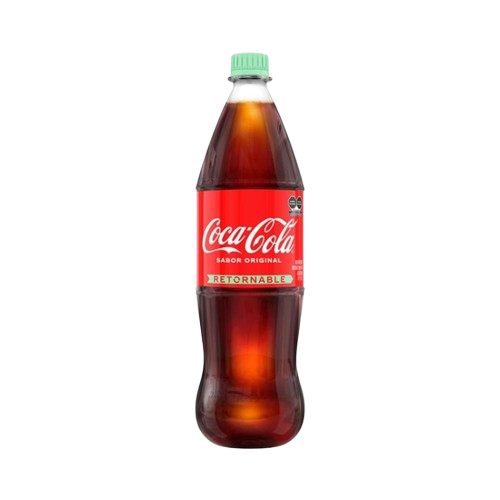

Módulo 02 de 07
Gestión y evaluación de la producción automatizada
Análisis de las tres líneas de producción: diagramas, VSM, layout, indicadores y simulación en Plant Simulation.
Alcance
Tres productos, tres retos de proceso
La planta fabrica tres presentaciones con secuencias, velocidades y estrategias de calidad diferenciadas, según los requisitos del proyecto.

Coca-Cola retornable
Lavado con soda cáustica, inspección de envase, llenado isobárico y etiquetado.

Coca-Cola PET 2.5 L
Soplado de preformas, inspección automática, llenado y control de calidad en línea.

Monster Energy
Línea de latas: llenado, sellado seamer, codificado y empaque termoencogido.
Desempeño operativo
Indicadores de producción por línea
Cálculo de disponibilidad, takt time, capacidad y utilización para cada línea evaluada.
Monster Energy
OEE, tiempos de ciclo por estación y análisis de paradas de la línea de latas.
Ver hoja de cálculo → L1 · L2 · VidrioCoca-Cola retornable 1.5 L
Eficiencia, lavado, velocidades nominales y causas de descarte en vidrio retornable.
Ver hoja de cálculo → L5 · PETCoca-Cola no retornable 2.5 L
Comportamiento operativo de la línea PET, inspección automática y calidad.
Ver hoja de cálculo →Flujo de valor
Value Stream Mapping
Flujo de materiales e información a lo largo del proceso productivo. El comparativo antes/después de automatizar sustenta las mejoras propuestas.

Distribución en planta
Layout de líneas FEMSA Coca-Cola
Disposición física de las líneas y flujo de materiales dentro de la planta de referencia.

Proceso por línea
Líneas de producción analizadas
Flujo productivo, velocidades nominales y características de cada línea incluida en la propuesta.
Botella retornable de vidrio — 237 ml
Proceso de lavado con soda cáustica, inspección visual y automática, llenado isobárico y etiquetado. Opera de 6 a.m. a 2 p.m.

Botella retornable de vidrio — 350 ml
Mayor velocidad nominal del conjunto retornable. Igual secuencia de lavado, inspección y llenado. Opera de 6 a.m. a 2 p.m.

Simulación de producción
Modelos en Plant Simulation
Modelos Tecnomatix de las líneas para estimar tiempos, validar cambios de producto y calcular el OEE con tiempos de set-up y fallas de equipos.
Resultados de la simulación (OEE antes / después)
Evidencia del análisis comparativo de la producción basado en simulación.
- Capturas del modelo en Plant Simulation (vista 2D/3D de las líneas).
- Tabla o gráfico de OEE, Takt y MLT antes y después de automatizar.
- Escenarios de cambio de producto y fallas simuladas.
Documentación del módulo